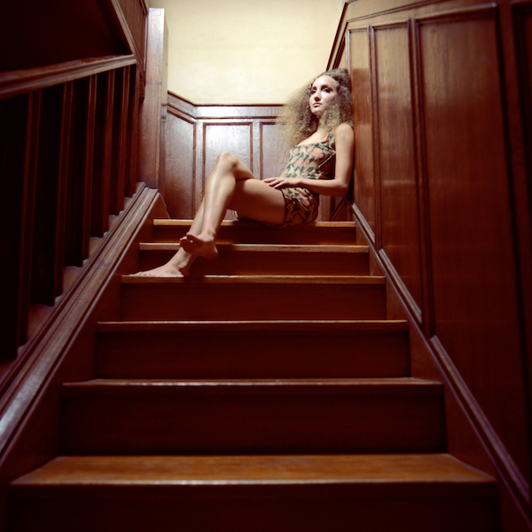
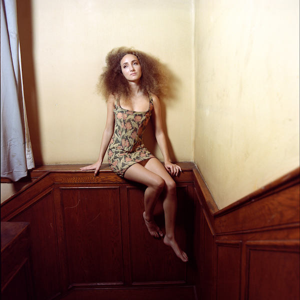
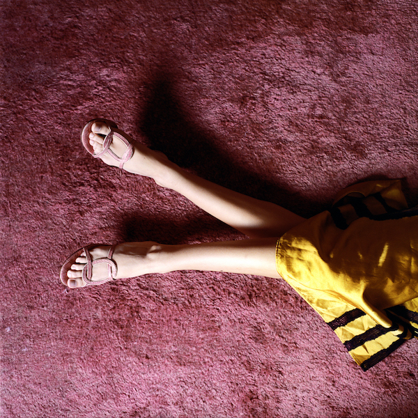
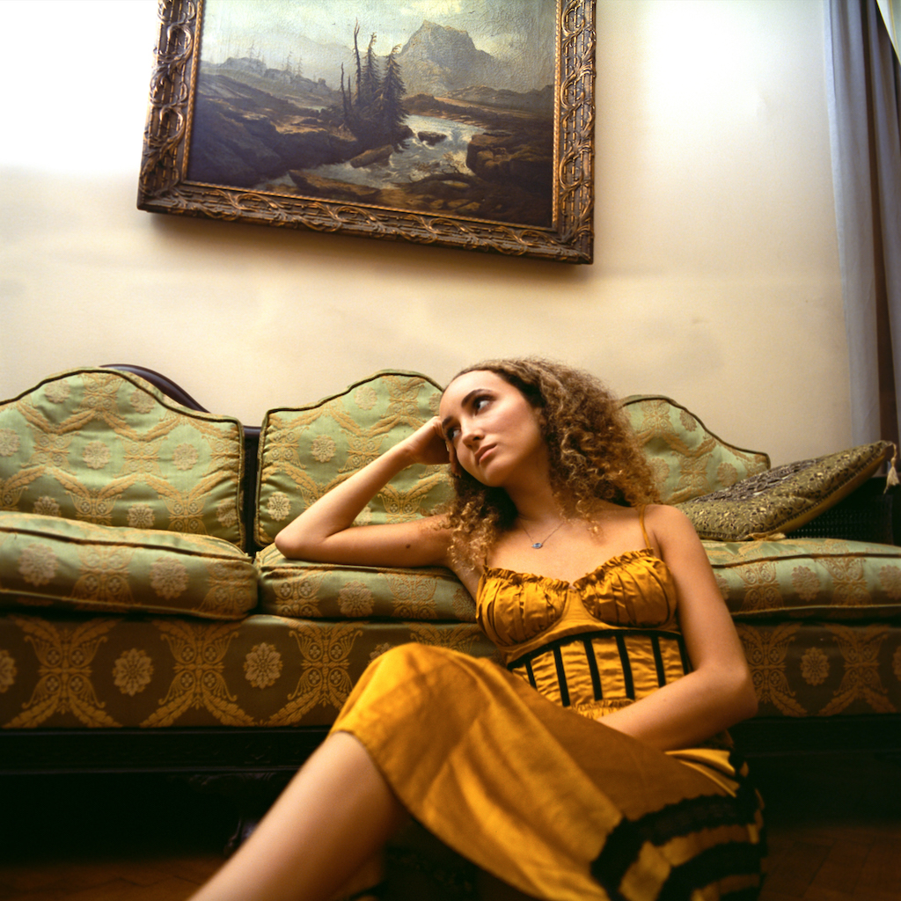
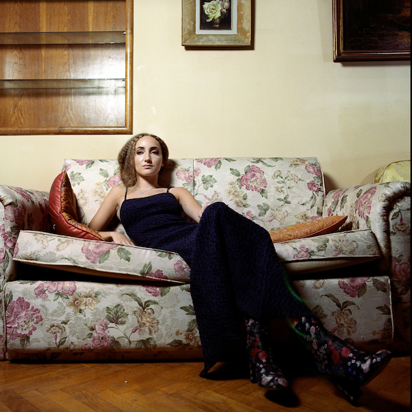

Creative Direction & Photography: Mena Assad
Art Direction & Styling: Ismail Thabet
Model: Ines Sawiris
Shot on Portra 400 & Portra 800
Developed & Scanned at
The Darkroom Cairo
Lewis Carroll’s Alice in the Wonderland contained
rebuttals for prevalent medical theories back then. Especially
Sir James Crichton-Browne’s 1860 paper “Psychological Diseases
in Early Life” which denounced the practice of “castle building”
or daydreaming in Children. Carroll’s Alice in the Wonderland
and its sequel Through the Looking Glass alternatively advocated
daydreaming, boredom, and imaginative flights as essential
building blocks for creativity.
Inspired by Carroll’s approach to these concepts, “In A Wonderland She Lies”
is a photographic series whose protagonist is modern day Alice, championing
the forgotten virtues of boredom, dreaming away the days, departing on imaginative
flights away from some mundane reality, in a Wonderland of her own creation she lies
“In a Wonderland [she lies],
Dreaming as the days go by,
Dreaming as the summers die:
Ever drifting down the stream-
Lingering in the golden gleam-
Life, what is it but a dream?”
THROUGH THE LOOKING-GLASS.